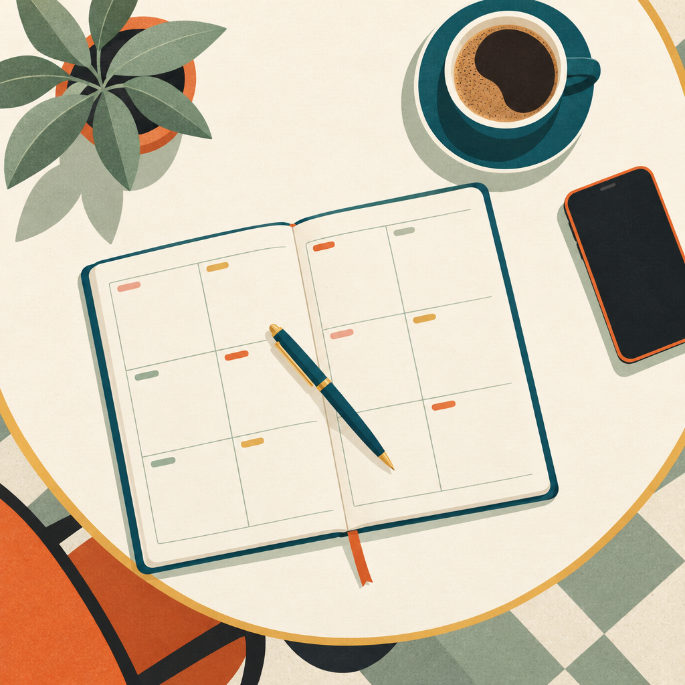

Alles goed? Hoe gaat het (met jou / met u)? Hoe is het (met jou / met u)?
vertellen hoe het gaat (telling someone how you are)
++
prima
++
fantastisch
++
uitstekend
++
heel goed
++
hartstikke goed
+
goed
+–
het gaat wel
+–
niet zo (goed)
–
niet goed
–
slecht
Opdracht 2
Walk around the classroom. Ask another student how they are. They answer and ask how you are. You answer. Ask four students.
Example
A: Hoe gaat het? B: Het gaat wel. Hoe is het met jou? A: Heel goed. A: Alles goed? C: Prima. En met jou? A: Niet zo.
zes6
Hoofdstuk 4 · Op straat4.4 Zullen
4.4Zullen (1) – voorstel
Zullen we iets afspreken? Zullen we voor zaterdag een afspraak maken? Zullen we om 16.00 uur bij ons thuis afspreken? Zal ik dan spaghetti carbonara maken?
Opdracht 3
React with Zal ik …? / Zullen we …? In your reaction, use the words in the second column.
Ik wil op vakantie!een paar dagen naar Parijs gaan
Dit is een leuk café!hier iets drinken
Waar zijn Bart en Astrid?in de kantine kijken
Ik wil afrekenen.de ober roepen
Wat zeg je? Wat is je naam?mijn naam spellen
Hé Hans, lang niet gezien!een afspraak maken
Wat eten we?spaghetti maken
Edit is jarig.een boek geven
Example
Ik wil iets drinken.
cola bestellen
Zullen we cola bestellen?
zeven7
Hoofdstuk 4 · Op straat4.5 Afspraak
4.5Een afspraak maken en positief of negatief reageren
een afspraak maken / iemand uitnodigen (arranging to meet / to invite someone)
Zullen we voor zaterdag een afspraak maken? Zullen we iets afspreken?
Work in pairs. Together, make up a dialogue. In the dialogue you have to:
een voorstel doen (Zullen we …?)
negatief reageren
een ander voorstel doen
positief reageren
negen9
Hoofdstuk 4 · Op straat4.6 Samen
Opdracht 6Woorden invullen
Which words fit in these sentences?
Kun je om 16.00 uur komen? Ja, kan.
Ik moet ervandoor. de groeten aan je ouders.
Kun je woensdag de 8ste? Nee, kan ik niet.
Ik ga naar het café. Gaat Susy naar het café?
Alles goed? Ja, prima. En jou?
Opdracht 7Een afspraak maken
A
You get a diary. Write five activities in it. Write down the time too.
Example
Donderdag 21.00 Susy, café De Lente.
B
You work in a group of three students. You may not see each other’s diary. Together, make an appointment for this week. Agree on the activity, the time and the place.

tien10
Hoofdstuk 4 · Op straat4.7 Tekst
4.7Tekst
Voor informatie over de diensten van het Talencentrum van de Rijksuniversiteit Groningen kunt u onze website bezoeken: www.rug.nl/talencentrum. Hebt u vragen die niet beantwoord zijn na het raadplegen van onze website, dan doen wij ons best uw e-mail zo spoedig mogelijk te beantwoorden.
Met vriendelijke groet,
Het secretariaat
Secretariaat Talencentrum, Rijksuniversiteit Groningen Harmoniecomplex, kamer (13)15.0129 Oude Kijk in ’t Jatstraat 26 Postbus 716 9700 AS Groningen
Openingstijden van het secretariaat: maandag t/m vrijdag 12.00-16.00 uur, donderdag 12.00-20.00 uur. Het secretariaat is op werkdagen van 9.00 tot 17.00 uur telefonisch bereikbaar, tel. 050-3635802.
Opdracht 8
You want to go to the office (secretariaat) of the Talencentrum. You work every day until 17.00. When can you go to the office?
elf11
Hoofdstuk 4 · Op straat4.8 Uitspraak
4.8Uitspraak: e – ee
Opdracht 9e – ee
You hear words with e – ee. Which words have the same sound as 6 (zes)? Which have the same sound as 2 (twee)? Put the words in the right column. You hear each word twice.
6
2
Opdracht 10e – ee
Listen carefully to these words and repeat them.
wel ▪ verder ▪ hebben ▪ lekker ▪ hetzelfde ▪ moment ▪ wensen ▪ prettig ▪ tekst ▪ vertellen
week ▪ heeft ▪ idee ▪ probleem ▪ deze ▪ geven ▪ tegen ▪ uitstekend ▪ nemen
hetzelfde ▪ nemen ▪ probleem ▪ deze ▪ tegen ▪ wel ▪ verder ▪ idee ▪ prettig ▪ hebben
twaalf12
Hoofdstuk 4 · Op straatIn de praktijk
Cultuur
Voor welke activiteiten maak je een afspraak?
naar een café gaan met een vriend
ja / nee
koffiedrinken met een collega
ja / nee
eten bij vrienden / familie / …
ja / nee
je verjaardag vieren
ja / nee
In de praktijk
In de praktijk
Doe een voorstel aan iemand. Gebruik Zullen we … / Zal ik …?
dertien13
Hoofdstuk 4 · Op straatEigen vocabulaire
Eigen vocabulaire
Eigen vocabulaire
The theme of this chapter is Op straat.
Which words would you like to add? Write them below.
veertien14
Hoofdstuk 4 · Op straatReflectie
Reflectie
What can you do now?
Can you now understand the dialogue at the start of this chapter?